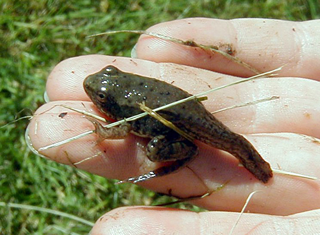

SECTION 15-3 · 两栖纲分类
两栖纲的分类
现代两栖纲根据 体型、附肢、尾的有无 等特征，分为三个 目：
两栖纲分类
两栖纲→
无足目（蚓螈）
+
有尾目（蝾螈·大鲵）
+
无尾目（蛙·蟾）
三个目分别对应三种不同的体型适应：无足（穴居蠕虫型）、有尾（水生蝾螈型）、无尾（跳跃蛙型），代表两栖类对不同生态位的适应辐射。
三目口诀："无足蚓螈穴居，有尾蝾螈大鲵水栖，无尾蛙蟾跳跃"。按"足/尾"两个特征区分。
一、无足目 Apoda（蚓螈型）
代表动物：蚓螈（如版纳鱼螈）。
主要特征：
- 体形 细长，呈蠕虫状（蚓螈型），无四肢，适应穴居生活；
- 尾短或无尾；
- 皮肤光滑，真皮内埋有退化的骨质鳞（这是两栖类中保留古代鱼类鳞片痕迹的少数类群，反映其原始性）；
- 眼退化，多穴居于热带湿润土壤中。
无足目=蚓螈=蠕虫型+无四肢+穴居+真皮有退化鳞(唯一保留鳞的两栖类)。常考其"保留鳞片"的原始性。
二、有尾目 Caudata（蝾螈型）
代表动物：各种蝾螈、大鲵（娃娃鱼）。
主要特征：
- 体形 分为头、躯干、尾三部分，终生有尾（蝾螈型）；
- 四肢 等长或不发达，前肢和后肢大小相近；
- 多 水栖或半水栖，少数终生水生（如蝾螈部分种类终生保留鳃）；
- 脊椎骨数目多，躯干肌保留原始分节现象。
重要代表——大鲵（娃娃鱼）：我国特产，是 现存最大的两栖动物，国家二级保护动物，叫声似婴儿啼哭（故名"娃娃鱼"），生活于山区清澈溪流中。
有尾目=蝾螈+大鲵=终生有尾+四肢等长+多水栖。大鲵=现存最大两栖动物+国家二级保护+娃娃鱼。
三、无尾目 Anura（蛙蟾型）
代表动物：各种蛙类（如黑斑蛙、金线蛙、雨蛙、树蛙）和蟾蜍。
主要特征：
- 体形 短宽，成体无尾（蛙蟾型），尾椎愈合成一块 尾杆骨；
- 后肢 特别发达，适于跳跃和游泳；前肢短小，适于着陆支撑；
- 成体肺呼吸为主，辅以皮肤呼吸和口咽腔呼吸；
- 雄蛙具一对声囊（可发声），蟾蜍毒腺发达（耳后腺）；
- 典型的 变态发育：蝌蚪→成蛙。
蛙与蟾蜍的区别：
- 蛙：皮肤光滑湿润，善跳跃，水栖/半水栖，后肢长而有力，齿有（上颌齿）；
- 蟾蜍：皮肤粗糙干燥（角质化较高，较耐旱），毒腺（耳后腺）发达，善爬行，陆栖为主，无齿。
无尾目=蛙蟾=成体无尾+后肢发达+跳跃。蛙(光滑善跳水栖)vs蟾蜍(粗糙耐旱陆栖毒腺)。三目中种类最多。
| 特征 | 无足目（蚓螈） | 有尾目（蝾螈·大鲵） | 无尾目（蛙·蟾） |
|---|---|---|---|
| 体型 | 蠕虫状 | 头-躯-尾，终生有尾 | 短宽，成体无尾 |
| 四肢 | 无 | 有，等长或不发达 | 有，后肢特别发达 |
| 尾 | 短或无 | 终生有 | 成体无(尾杆骨) |
| 鳞片 | 真皮有退化骨质鳞 | 无 | 无 |
| 栖息 | 穴居(热带湿土) | 水栖/半水栖 | 水陆两栖/陆栖 |
| 代表 | 蚓螈、版纳鱼螈 | 蝾螈、大鲵(娃娃鱼) | 黑斑蛙、蟾蜍、树蛙 |
| 演化/地位 | 最古老特化 | 最接近祖先 | 最繁盛成功 |
| 变态 | 直接发育(多数) | 有/无变态 | 典型变态发育 |
四、两栖类的变态发育（重点）
两栖类的个体发育典型地体现了"水生→陆生"的转变，以蛙的变态发育最为典型：
蛙的变态发育
受精卵(水中)→
蝌蚪(水生:有尾有鳃,单循环,有侧线,植食)→
变态期(四肢长出,尾吸收,鳃退化,肺形成)→
幼蛙→成蛙(陆生:无尾肺呼吸,双循环,肉食)
蝌蚪与成蛙的关键差异（集中体现水陆转变）：
- 呼吸：蝌蚪用鳃（先外鳃后内鳃）→ 成蛙用肺+皮肤；
- 运动：蝌蚪有尾无四肢 → 成蛙无尾有五趾型四肢；
- 循环：蝌蚪一心房一心室、单循环（似鱼）→ 成蛙二心房一心室、不完全双循环；
- 感觉：蝌蚪有侧线（水生特征）→ 成蛙侧线消失，出现中耳鼓膜；
- 食性：蝌蚪多植食（刮食藻类，肠长）→ 成蛙肉食（捕虫，肠短）；
- 排泄：蝌蚪排氨（似鱼，水生）→ 成蛙排尿素（陆生适应）。
变态发育是"个体发育重演系统发育"的范例：蝌蚪≈鱼(鳃/尾/单循环/侧线/排氨)，成蛙≈陆生(肺/四肢/双循环/中耳/排尿素)。甲状腺激素调控。

两栖纲的演化地位：两栖纲是由古代 总鳍鱼类 演化而来，是脊椎动物登陆的先驱。其登陆的不完善性（肺呼吸不完全、双循环不完全、皮肤未充分角质化、生殖离不开水）使其在陆地上的适应力受限，故被后来的爬行类（完全陆生，羊膜卵）所超越，但在脊椎动物演化史上具有承前启后的关键地位——从水生到陆生的过渡桥梁。
两栖类=总鳍鱼后代+登陆先驱+过渡桥梁。生殖离不开水=登陆不彻底；爬行类羊膜卵=彻底登陆。
两栖纲分类核心记忆点
- 三目：无足目（蚓螈，蠕虫型，穴居，真皮有退化鳞——唯一保留鳞）、有尾目（蝾螈·大鲵，终生有尾，四肢等长，多水栖，最接近祖先）、无尾目（蛙·蟾，成体无尾，后肢发达，最繁盛）。
- 大鲵=现存最大两栖动物+国家二级保护+娃娃鱼。
- 蛙vs蟾蜍：蛙光滑善跳水栖，蟾蜍粗糙耐旱陆栖毒腺发达。
- 变态发育：蝌蚪(鳃/尾/单循环/侧线/排氨/植食)→成蛙(肺/四肢/双循环/中耳/排尿素/肉食)，甲状腺激素调控。
- 变态发育是"个体发育重演系统发育"的范例。
- 演化地位：由古代总鳍鱼演化，登陆先驱，水陆过渡桥梁；生殖离不开水=登陆不彻底。